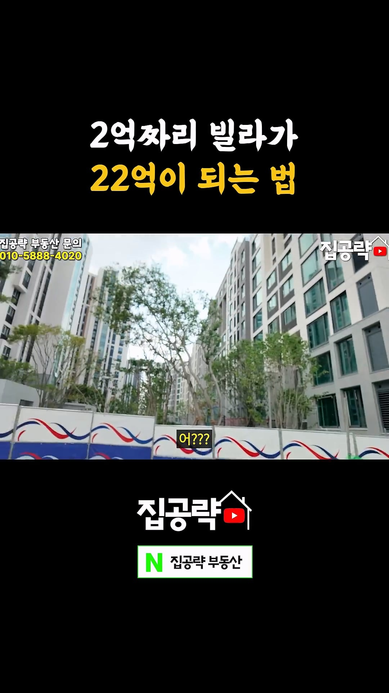
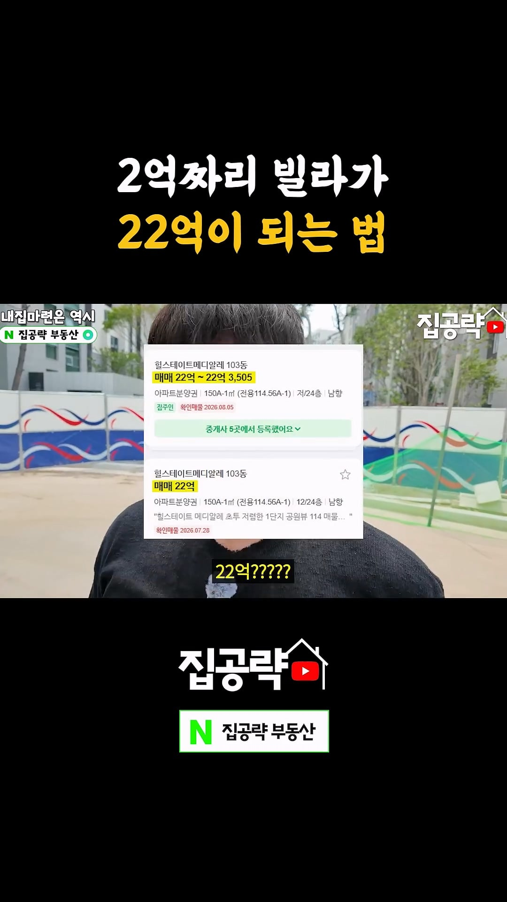

이건 그냥 로또사면 1등 될 수 있습니다 라는거지
일반적인게 아니잖아...


이건 그냥 로또사면 1등 될 수 있습니다 라는거지
일반적인게 아니잖아...
아파트든 빌라든 지랄 그냥 로토 맞은거구만
ㅇㅇ 구축 사면 재건축 절대 안됨 지금 분담금 미쳐서 ㅋㅋㅋㅋ차라리 저 로또가 더 확률 높음
재개발 빌라 못해도 10년 20년 봐야함, 호재 만약에 있고 곧 될거같다 그러면 이미 피 잔뜩 붙어있음
건축비 상승으로 상급지 말고 사실상 용적율 200% 이하여야 될까 말까임. 그말인즉 서울 왠만한 90년 후반 아파트는 재건축 힘들다는말
근데 공급은 늘려야하니 규제 완화하겠다? 재개발은 가능성있다는 말이지
이미 2-3년 전부터 빌라, 원룸 매매 많이 올랐음. 지금 빌라 가격올랐다는것도 수요가 늘어서가 아니라 부동산 투자가 구축 다세대로 가고있어서야
전부는 아니더라도 맞는 말임
어느 도시든 재개발이 원도심지로 회귀하고 있음
빌라 하나 사서 묵혀둘 만은 함
쉽지 않아서 그렇지
진짜 죽을때까지살 각오로 입지 좋은곳 주차대수 2대 이상 대형평형 빌라 들어가는건 나쁘지 않다고 생각함 운좋으면 로또 안좋아도 재산세 적게내는 괜찮은 집
삼성동 빌라
표정 싱글벙글한거보소 ㅋㅋㅋㅋㅋㅋㅋ
아직도 한국 부동산을 아파트 빌라 주택 오피스텔로 보면 답 없다.
저거랑 결이 좀 비슷한데 내가 옛날부터 얘기했지만 오늘도 얘기한다. 오피스텔 사지 말라고 하는 새끼들은 그냥 내가 예전에 썻던 댓글 보고 공부해라.
그리고 평지 빌라 매매는 현생 말고 물려줄 자식 있으면 무조건 안전 자산이니까 실 거주랑 같이 들어가는거 문제없음.
당연히 동네는 보고 들어가고.
예를 들어 서대문구 빌라촌들 냅두고 면목동 빌라촌 들어가진 않을꺼 아냐. 조금이라도 뇌가 있으면.
뇌가 있는 네놈이 쓴 댓글을 어케보니
그냥 GPT 요약본 여기에 다시 올려
사족이 병신같네 ㅋㅋㅋ 집 없는 민달팽이들 드글드글
40평 분담금이 얼마인지도 알려줘야지 ㅋㅋㅋㅋ
그런 좋은 위치의 빌라는 이미 주인이 다 있고
저대로 하려면 빌라에서 30년은 살아야지 ㅋㅋㅋ
15년 봐야합니다
그렇다고 재개발 운운하면서 신축빌라 분양하는건 절대 안된다. 첫째도 노후고 둘째도 노후니 신축분양 한다는건 그동내 재개발 안한다는거
우리동네도 재개발 한다 한다 그렇게 8년 끌다 이제서야 이주 다 끝나고 석면 철거 시작함
15년 보고 로또급 확률
분담금은 당연 추가고
입이 귀에 걸려있네 ㅋㅋㅋㅋㅋㅋㅋㅋㅋ 부럽다
재건축은 이미 막차 떠났다고 봄.
분담금이 존나 많아져서 되더라도 원 주민이 들어갈 수 있는 경우는 존나 많이 줄어듬. 사실상 할 수 없는 수준이지.
재재는 이제 끝물이지 뭐
저것도 분담금 감당 못하는 사람은 25년에
권리금 4억6천 프리미엄 5억해서 10억에 팔았었음
10억에 사서 분양되면 22억 이니까 10억번사람이 많을듯
와 2억으로 로또 두번 당첨 되셨네
부동산이 업이라 어느정도 알고 샀을거임
개별분담금이나 조합청산같은 여러가지 문제들이 산적해있는데 이건 뭐 주식 쌀때사서 비쌀떄 팔라는수준이네ㅋㅋㅋㅋㅋ ㅋㅋㅋㅋㅋㅋㅋ
대조 1구역 공사비 증액에 일반 분양 미달에 분위기 안좋았었는데 잘 살아난 케이스지
저기 넣은 사람들이 진짜 승자됐다 ㅋㅋ
대박난 사례 들고오면 들고올수있지 근데 망한사례가 그 10배는 될듯ㅋㅋ
빌나다 빌라
일반적인건 아니긴 한데 이제 재건축이 될 수록 빌라의 가치가 더 늘어날 수 있단거임. 아파트 부수고 아파트 지어봐야 세대수가 안늘어나는데 빌라촌은 얘기가 다르지.
수익성 있는 재건축 가능한 땅이 점점 줄어 들고 있단거임.
물론 어느정도 입지도 봐야하고
아파트도 세대수 늘어나긴 함 보통 구축은 층수가 낮고
새로 지을땐 기부채납등을 통해서 용적률 최대한 땡겨서 고층으로 지으니까
그리고 결국 확률의 문제임. 아파트는 재건축 승인이 나느냐, 분담금을 감당 가능하느냐의 문제지
재건축 하는거 자체를 반대하는 세대는 별로 없음.
빌라는 잘개 쪼개져 있어서 각 소유주들 찾아서 동의받는거 자체가 하늘의 별따기라 쉬운일이 아님
동의 안해주는 경우도 많고
나 초딩때 재개발 한다 머다 하면서 뭐하다
고딩쯤? 슬슬 사람들 쫓겨나고 20중반쯤 다빠져나가더니
지금 30초반이구만 이제 입주함ㅋㅋ
몆년을걸린거냐
저거랑 비슷한 게 재개발/재건축 지역 상가임. 이것도 물건과 협상능력에 따라 대박이냐 쪽박이냐 로또이긴 함. 저렇게 좋은 물건 찾아 내서 이익 보는 것도 능력이지만 암것도 모르는 사람들 꼬시는 건 하지 말았으면 좋겠다. 너무 위험성 높은 투자임.
걍운봏은청년아님?
근데 그냥저냥 혼자살거면 빌라 어떰